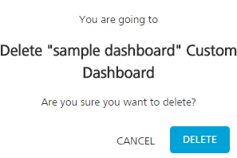
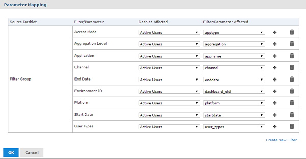

Working with Custom Dashboards
Working with custom dashboards include the following:
- Creating a Custom Dashboard
- Updating a Custom Dashboard
- Deleting a Custom Dashboard
- Input Control (Parameter) Mapping
Creating a Custom Dashboard
You can create a new custom dashboard from the Custom Dashboard screen.
To create a custom dashboard, follow these steps:
-
Log on to VoltMX Foundry Console and click Reports from the left pane of the screen.
The Reports screen appears.
-
Click Custom Dashboards tab from the upper pane of the screen.
The Custom Dashboards window appears.
-
Click CREATE NEW to create a new dashboard.
The Dashboard Designer appears displaying the list of accessible reports from the Available Content section and the Canvas.
-
From the Available Content, drag one of the reports to the canvas.
The dragged report appears in a frame in the upper left corner of the canvas.
If a dragged report has input controls, they will appear on the left side of the canvas under filters.

Example: If the Active Users report is being dragged, then input controls of the Active users will appear under filters.
-
In the filter section, click + icon of the selected report to expand the tree and display the input controls.
- Drag the filters to the canvas to add them to the dashboard.

-
Click Preview.
The end user view of the dashboard appears.
-
To close the preview and return to the Dashboard Designer window, click Close Preview.

Apart from adding reports the user can also add images or web page to the dashboard.

-
Click Save.
A Save As dialog appears.

Following are the UI elements displayed for the Save As dialog:
| Field | Description |
|---|---|
| Name | Enter the name of the dashboard. |
| Description | Enter the description for the dashboard created. |
| Folders | Select the folder to save the dashboard. |
| Save | Click to save the entered details. |
| Cancel | Click to discard the changes. |
Perform the following actions to save the created dashboard:
- Add the name and description for the dashboard in the text boxes provided.
- Select the folder in which dashboard need to be saved.
- Click Save to save the dashboard.
Run a Custom Dashboard
You can run the dashboard created from the Custom Dashboards page.
To run the created custom dashboard, follow these steps:
-
Go to Custom Dashboards page.
A list of Custom Dashboards are displayed.
-
Click Options (a circle with three dots) displayed across each row.
-
Click Run Report to run the selected custom dashboard.
Dashboard View page appears.
-
Select the input controls and click Apply .
The chart of the updated input controls gets refreshed.

-
Click X from the upper right corner of the designer page to close the dashboard view page.
Updating a Custom Dashboard
You can update the custom dashboard from the Custom Dashboards screen.
To edit and update a custom dashboard, follow these steps:
- Log on to VoltMX Foundry Console and click Reports from the left pane of the screen.
-
Click Custom Dashboards tab from the upper right corner of the Reports window.
A list of created custom dashboards are displayed.
-
Click Options (a circle with three dots) displayed across each row of the created custom dashboard.
-
Click Edit to edit the selected custom dashboard.
Dashboard View window appears. The view of the Dashboard View window is similar to the creation view of custom dashboard.
-
Perform the necessary changes and click Save .
The save option overrides the current dashboard with the new changes.
-
Click Save As to save it as a new dashboard.
- Click X from the upper right corner of the screen to close the Dashboard Designer window.
Deleting a Custom Dashboard
You can delete the created dashboard from the Custom Dashboards window.
To delete a custom dashboard, follow these steps:
-
Click Custom Dashboards tab from the Reports page of Volt MX Foundry Console.
A list of custom dashboards created are displayed.
-
Click Options(a circle with three dots) displayed across each record.
-
Select Delete to delete the selected dashboard.
A confirmation dialog appears.

-
Click DELETE.
The selected custom dashboard is deleted.
Input Controls (Parameter) Mapping
Parameter Mapping helps you to map the filter/parameter to the dashlets and parameters affected. To access the Parameter Mapping window, follow these steps:
- Double click a dashboard from the Custom Dashboards window.
-
Click Input Control Mapping icon from the tool bar.
The Parameter Mapping window appears.

The Parameter Mapping window displays the filter-to-dashlet mapping with the following UI elements:
| Column | Description |
|---|---|
| Source Dashlet | Name of the dashlet from where the filter orginates. Also displays the Filter Group (multiple filters in a single dashlet) or Manually Created Filter (filter created using Parameter Mapping). |
| Filter/Parameter | Name of the filter |
| Dashlet Affected | Menu list displaying all the dashlets affected by the filter. |
| Filter/Parameter affected | Menu list including all the parameters associated with the selected dashlet in the Dashlet Affected column, |
| Add | Add additional dashlet/parameter combinations to a filter. |
| Delete | Deletes a dashlet/parameter combination. |
Adding a Filter
You can add a filter to the existing list of filter from the Parameter Mapping window.
To add a new filter using Parameter Mapping, follow these steps:
-
Open a dashboard with filters, and click Input Control Mapping icon.
The Parameter Mapping window appears.
-
Click + displayed across each filter.
A new row containing affected dashlet and filter/parameter menu list appears.
-
Select the dashlet and parameter combination to apply to the dashboard.
- Click OK to apply and save the changes.
Deleting a Filter using Parameter Mapping
You can delete a created filter from the Parameter Mapping window.
To delete a filter from the Parameter Mapping window , follow these steps:
-
Open a dashboard with filters, and click Input Control Mapping icon.
The Parameter Mapping window appears.
-
Click Delete icon displayed across each row.
The selected row is deleted from the Parameter Mapping window.
Creating a New Filter
You can create a new filter in the Parameter Mapping window.
To create a new filter, follow these steps:
-
Open a dashboard with filters, and click Input Control Mapping icon.
The Parameter Mapping window appears.
-
Click Create New Filter.
A new row is added to the window.
-
In the Filter column, enter the name of the new filter and click outside the text box to apply the name.
- Click + and select the dashlet and parameter combination to apply.
- Click OK to apply the changes and save.
To map the parameters of one report to the other report, follow these steps:
Let us consider an example of Active Users and Named Users reports.
-
Add Active Users and Named users reports to the dashboard.
In the Filter section, both the Active users and New users reports input controls appears.

- Expand the folder of Active Users in the Filter section and drag the input controls to the Dashboard Canvas.

- Click Parameter Mapping icon to open parameter mapping dialog.

In the above image, you can find all the input controls are mapped only to Active users report.
- To map the same input controls to New users report, click + on each of the input control and select the dashlet (New Users) and parameter combination.
Note: User Types input control of Active users cannot be mapped to New users report because New Users report do not have the same input control name.
- Click OK to apply the changes.
- Click Preview icon to run the dashboard.
-
Select the input controls and click Apply to refresh both the charts.
Both the charts are refreshed because input controls are mapped to both the charts.
-
You can change only the user types input control and click Apply to refresh the active users report.

Similarly, you can map the custom reports which has common input controls.